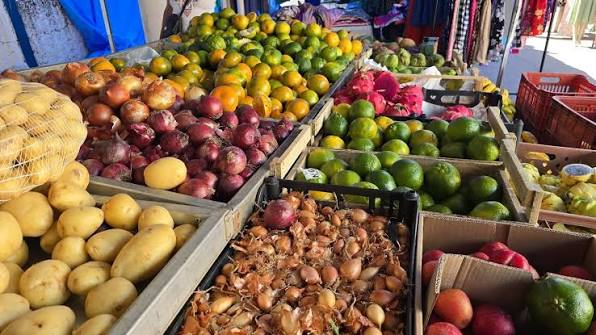

A feira reúne o que há de melhor na produção dos cooperados. Os produtos se dividem em três grandes grupos:
Preços praticados na última feira (podem variar conforme a safra):
| Produto | Unidade | Preço(R$) |
|---|---|---|
| Alface | Maço | 3,00 |
| Ovos Caipiras | Dúzia | 12,00 |
| Mel | Pote 500g | 25,00 |
| Queijo coalho | Kg | 40,00 |
Para manter a organização e a qualidade, todo feirante deve seguir os passos abaixo,nesta ordem:
A feira é vitrine do nosso trabalho. Capricho na barraca é respeito com quem compra.
Para se tornar um feirante ou tirar dúvidas, procure a administração sa cooperativa ou acesse o site oficial:
https://www.cooperativapindorama.com.br/
Feira da Cooperativa Pindorama _ Colônia Pindorama,Coruripe,Alagoas
voltar